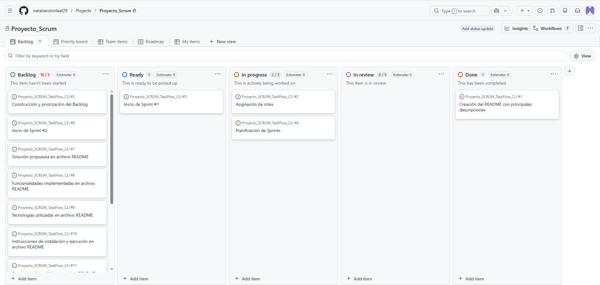

NATALIA ROLÓN LEAL
JUNIOR SOFTWARE DEVELOPER
Apasionada por crear aplicaciones web innovadoras | Campuslands
Ver mis proyectosSOBRE MÍ
Programadora de software en formación en Campuslands, especializada en lenguajes y tecnologías como HTML, CSS, Git, SCRUM, PSeint y Python.
Desarrollando proyectos con la metodología ágil SCRUM, maquetando experiencias web con HTML, CSS y JavaScript y construyendo lógica de aplicaciones con Python. Busco siempre mejorar y desarrollarme en mi profesión, implementando trabajo en equipo y comunicación asertiva para destacar en las grandes empresas de programación y/o tecnología.
HABILIDADES
PROYECTOS DESTACADOS


CONTÁCTAME
Estoy convencida de que mi experiencia en desarrollo de software puede aportar valor inmediato a la empresa ¡Hablemos!